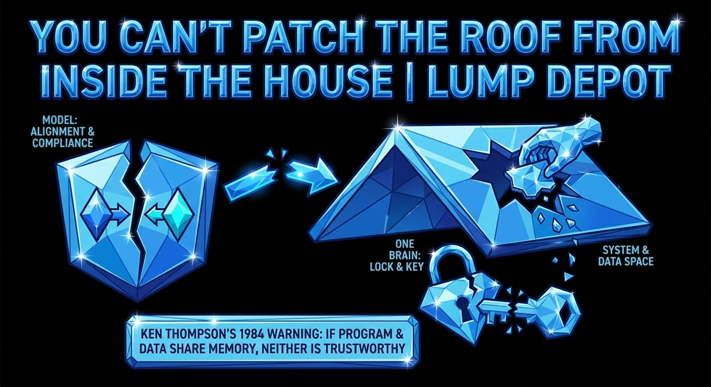

You Can't Patch the Roof From Inside the House
The Gay Jailbreak turns a model's own alignment against itself, and it's the same flaw Ken Thompson described in 1984: when the program and data share the same space, you can't trust either one.